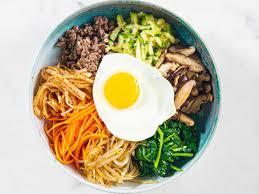

Bibimbap

Description
This bibimbap recipe makes a popular and delicious Korean meal. Meaning mixed rice, bibimbap is a delicious rice bowl topped with vegetables, beef, a whole egg, and gochujang (red chili pepper paste). Traditionally, bibimbap was eaten on the eve of the Lunar New Year, to use up any leftovers before the start of the new year.
Ingredients
These are the ingredients you will need to make Korean rice with mixed vegetables and beef:
- Cucumbers: This bibimap recipe starts with cucumbers, cut into matchsticks, mixed with gochujang (optional, but it adds subtle heat).
- Vegetables: You will also need spinach, cut into thin strips, and carrots, cut into matchsticks.
- Soy sauce: Soy sauce lends umami-rich flavor.
- Olive oil: Cook the carrots and garlic in olive oil.
- Seasonings: Take the flavor up a notch with fresh garlic and dried red pepper flakes.
- Steak: This recipe calls for thinly-sliced beef — top round steak is rich and beefy, which makes it perfect for bibimbap.
- Eggs: You will need one whole egg per serving.
- Rice: Ladle each serving over bibimbap over a cup of cooked white rice.
- Sesame oil: Toasting the sesame oil brings out a depth of flavor.
- Sesame seeds: A teaspoon of sesame seeds are the perfect finishing touch.
Steps
These are the steps you will need to make Korean rice with mixed vegetables and beef:
- Stir the cucumber pieces and gochujang together in a bowl.
- Cook the spinach until bright green and wilted.
- Drain the spinach, squeeze out as much moisture as possible, and set aside.
- Cook the carrots until soft, then stir in the cucumber mixture and red pepper flakes.
- Brown the beef in a different skillet and set aside.
- Fry the eggs until the yolks are runny, but whites are firm.
- Top each serving of rice with the spinach mixture, beef, and the cucumber mixture.
- Place an egg atop each serving, then drizzle with sesame oil, sesame seeds, and gochujang (if desired).